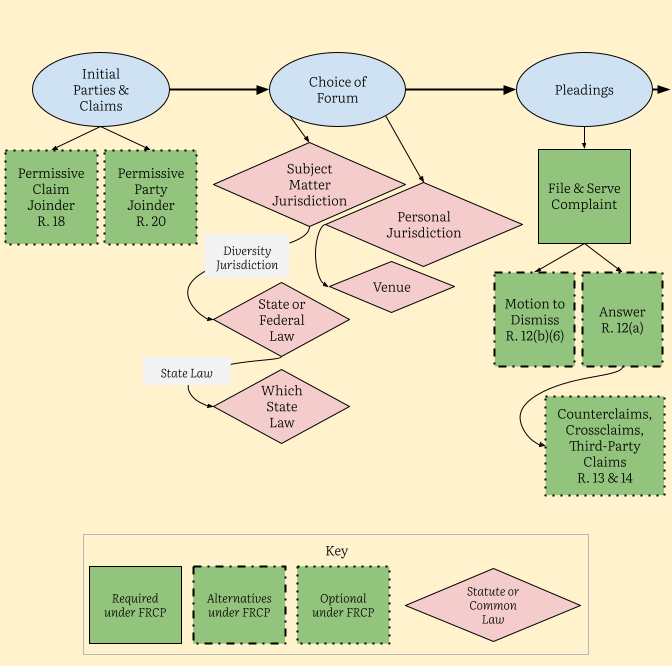

1 Foundations of Civil Procedure
Franz Kafka, Before the Law (1915)
Before the law sits a gatekeeper. To this gatekeeper comes a man from the country who asks to gain entry into the law. But the gatekeeper says that he cannot grant him entry at the moment. The man thinks about it and then asks if he will be allowed to come in later on. “It is possible,” says the gatekeeper, “but not now.” At the moment the gate to the law stands open, as always, and the gatekeeper walks to the side, so the man bends over in order to see through the gate into the inside. When the gatekeeper notices that, he laughs and says: “If it tempts you so much, try it in spite of my prohibition. But take note: I am powerful. And I am only the most lowly gatekeeper. But from room to room stand gatekeepers, each more powerful than the other. I can’t endure even one glimpse of the third.” The man from the country has not expected such difficulties: the law should always be accessible for everyone, he thinks, but as he now looks more closely at the gatekeeper in his fur coat, at his large pointed nose and his long, thin, black Tartar’s beard, he decides that it would be better to wait until he gets permission to go inside. The gatekeeper gives him a stool and allows him to sit down at the side in front of the gate. There he sits for days and years. He makes many attempts to be let in, and he wears the gatekeeper out with his requests. The gatekeeper often interrogates him briefly, questioning him about his homeland and many other things, but they are indifferent questions, the kind great men put, and at the end he always tells him once more that he cannot let him inside yet. The man, who has equipped himself with many things for his journey, spends everything, no matter how valuable, to win over the gatekeeper. The latter takes it all but, as he does so, says, “I am taking this only so that you do not think you have failed to do anything.” During the many years the man observes the gatekeeper almost continuously. He forgets the other gatekeepers, and this one seems to him the only obstacle for entry into the law. He curses the unlucky circumstance, in the first years thoughtlessly and out loud, later, as he grows old, he still mumbles to himself. He becomes childish and, since in the long years studying the gatekeeper he has come to know the fleas in his fur collar, he even asks the fleas to help him persuade the gatekeeper. Finally his eyesight grows weak, and he does not know whether things are really darker around him or whether his eyes are merely deceiving him. But he recognizes now in the darkness an illumination which breaks inextinguishably out of the gateway to the law. Now he no longer has much time to live. Before his death he gathers in his head all his experiences of the entire time up into one question which he has not yet put to the gatekeeper. He waves to him, since he can no longer lift up his stiffening body.

1.1 The Judicial System
1.1.1 Federal Courts
U.S. Constitution, Article III
Section 1
The judicial power of the United States, shall be vested in one Supreme Court, and in such inferior courts as the Congress may from time to time ordain and establish. The judges, both of the supreme and inferior courts, shall hold their offices during good behaviour, and shall, at stated times, receive for their services, a compensation, which shall not be diminished during their continuance in office.
Section 2
The judicial power shall extend to all cases, in law and equity, arising under this Constitution, the laws of the United States, and treaties made, or which shall be made, under their authority;–to all cases affecting ambassadors, other public ministers and consuls;–to all cases of admiralty and maritime jurisdiction;–to controversies to which the United States shall be a party;–to controversies between two or more states;–between a state and citizens of another state;–between citizens of different states;–between citizens of the same state claiming lands under grants of different states, and between a state, or the citizens thereof, and foreign states, citizens or subjects.
In all cases affecting ambassadors, other public ministers and consuls, and those in which a state shall be party, the Supreme Court shall have original jurisdiction. In all the other cases before mentioned, the Supreme Court shall have appellate jurisdiction, both as to law and fact, with such exceptions, and under such regulations as the Congress shall make.
Administrative Office of the U.S. Courts, Understanding the Federal Courts
Structure of the Federal Courts
The Supreme Court is the highest court in the United States. Article III of the U.S. Constitution created the Supreme Court and authorized Congress to pass laws establishing a system of lower courts. In the federal court system’s present form, 94 district-level trial courts and 13 courts of appeals sit below the Supreme Court.
Trial Courts
The U.S. district courts are the primary trial courts of the federal court system. Within limits set by Congress and the Constitution, the district courts have jurisdiction to hear nearly all categories of federal cases, including both civil and criminal matters. There are 94 federal judicial districts, including at least one district in each state, the District of Columbia, and Puerto Rico. Each district includes a U.S. bankruptcy court as a unit of the district court.
There are two special trial courts that have nationwide jurisdiction over certain types of cases. The Court of International Trade addresses cases involving international trade and customs issues. The United States Court of Federal Claims has jurisdiction over most claims for money damages against the United States, disputes over federal contracts, unlawful “takings” of private property by the federal government, vaccine injury cases, and a variety of other claims against the United States.
Three territories of the United States— the Virgin Islands, Guam, and the Northern Mariana Islands—have U.S. district courts that hear federal cases, including bankruptcy cases.

Appellate Courts
The 94 judicial districts are organized into 12 regional circuits, each of which has a United States court of appeals. A court of appeals hears challenges to district court decisions from courts located within its circuit, as well as appeals from decisions of federal administrative agencies. In addition, the Court of Appeals for the Federal Circuit has nationwide jurisdiction to hear appeals in specialized cases, such as those involving patent laws and cases decided by the Court of International Trade and the Court of Federal Claims.
United States Supreme Court
The U.S. Supreme Court consists of the Chief Justice of the United States and eight associate justices. At its discretion, and within certain guidelines established by Congress, the Supreme Court hears a small percentage of the cases it is asked to decide each year. Supreme Court cases are usually selected either because the lower courts have differed, or “split,” on a legal issue or they involve important questions about the Constitution or federal law.
Jurisdiction of the Federal Courts
Before a federal court can hear a case, or “exercise its jurisdiction,” certain conditions must be met.
First, under the Constitution, federal courts exercise only “judicial” powers. This means that federal judges may interpret the law only through the resolution of actual legal disputes, referred to in Article III of the Constitution as “Cases or Controversies.” A court cannot attempt to correct a problem on its own initiative, or to answer a hypothetical legal question.
Second, in an actual case or controversy, the plaintiff in a federal lawsuit also must have legal “standing” to ask the court for a decision. That means the plaintiff must have been aggrieved, or legally harmed in some way, by the defendant.
Third, the case must present a category of dispute that the law in question was designed to address, and it must be a complaint that the court has the power to remedy. In other words, the court must be authorized, under the Constitution or a federal law, to hear the case and grant appropriate relief to the plaintiff.
Finally, the case cannot be “moot,” that is, it must present an ongoing problem for the court to resolve. The federal courts, thus, are courts of “limited” jurisdiction because they may only decide certain types of cases as provided by Congress or as identified in the Constitution.
Although the details of the complex web of federal jurisdiction that Congress has given the federal courts is beyond the scope of this brief guide, it is important to understand that there are two main sources of the cases coming before the federal courts: “federal question” jurisdiction and “diversity” jurisdiction.
In general, federal question jurisdiction arises in cases that involve the U.S. government, the U.S. Constitution or federal laws, or controversies between states or between the United States and foreign governments. A case that raises such a “federal question” may be filed in federal court. Examples of such cases might include a claim by an individual for entitlement to money under a federal government program such as Social Security, a criminal prosecution by the government that alleges someone violated a federal law, or a challenge to actions taken by a federal agency.
A case also may be filed in federal court based on the “diversity of citizenship” of the litigants, such as between citizens of different states, or between U.S. citizens and those of another country. To ensure fairness to the out-of-state litigant, the Constitution provides that such cases may be heard in a federal court. An important limit to diversity jurisdiction is that only cases involving more than $75,000 in potential damages may be filed in a federal court. Claims below that amount may only be pursued in state court. Moreover, any diversity jurisdiction case regardless of the amount of money involved may be brought in a state court rather than a federal court.
Federal courts also have jurisdiction over all bankruptcy matters, which Congress has determined should be addressed in federal courts rather than the state courts. Through the bankruptcy process, individuals or businesses that can no longer pay their creditors may either seek a court-supervised liquidation of their assets, or they may reorganize their financial affairs and work out a plan to pay their debts.
Although federal courts are located in every state, they are not the only forum available to potential litigants. In fact, the great majority of legal disputes in American courts, civil or criminal, are addressed in the separate state court systems. State courts have jurisdiction over virtually all divorce and child custody matters, probate and inheritance issues, real estate questions, and juvenile matters, and they handle most criminal cases, contract disputes, traffic violations, and personal injury cases. In addition, certain categories of legal disputes may be resolved in special courts or entities that are part of the federal executive or legislative branches or state and federal administrative agencies.
1.1.2 State Courts
Each state, as well as the District of Columbia and territories such as Puerto Rico and the U.S. Virgin Islands, has its own judicial system. These are also organized into trial and appellate levels, though the structures vary somewhat.
Structure of State Courts
Trial Courts
State trial courts go by a variety of names: Superior Court,1 Circuit Court,2 District Court, Court of Common Pleas (Ohio and Pennsylvania),3 or Supreme Court.4
1 Alaska, Arizona, California, Connecticut, Delaware, District of Columbia, Georgia, Maine, Massachusetts, New Hampshire, New Jersey, North Carolina, Rhode Island, Vermont, and Washington.
2 Alabama, Arkansas, Florida, Hawaii, Illinois, Indiana, Kentucky, Maryland, Michigan, Mississippi, Missouri, Oregon, South Carolina, South Dakota, Tennessee, Virginia, West Virginia, and Wisconsin.
3 Colorado, Idaho, Iowa Kansas, Louisiana, Minnesota, Montana, Nevada, New Mexico, North Dakota, Oklahoma, Texas, and Utah.
4 New York.
Appellate Courts
Most states also have at least one intermediate appellate court, usually called the Court of Appeals5. In some states,6 the intermediate appellate court is divided into geographic districts, similar to the federal appellate circuits. Nine states 7 have no intermediate appellate court. Alabama and Tennessee have separate intermediate appellate courts for civil and criminal cases. Pennsylvania has a special intermediate appellate court (the Commonwealth Court) with jurisdiction over certain civil cases involving state and local government, and another (the Superior Court) for other civil appeals and all criminal appeals.
5 Exceptions include the Superior Court, Appellate Division in New Jersey, the Supreme Court, Appellate Division in New York, and the Superior and Commonwealth Courts in Pennsylvania
6 Arizona, California, Florida, Illinois, Indiana, Louisiana, Missouri, New York, Ohio, Tennessee, Texas, Washington, and Wisconsin.
7 Delaware, Maine, Montana, New Hampshire, Rhode Island, South Dakota, Vermont, West Virginia and Wyoming.
8 e.g. Supreme Judicial Court in Massachusetts and Maine; Supreme Court of Appeals in West Virginia; Court of Appeals in New York, Maryland, and the District of Columbia.
The highest court in each state is usually called the Supreme Court, though some states use other names.8 Texas and Oklahoma each have two courts of last resort: a Supreme Court for civil cases and a Court of Criminal Appeals for criminal cases.
Jurisdiction of State Courts
Unlike the federal courts, which have limited subject matter jurisdiction, state courts have plenary jurisdiction, meaning they have the power to hear almost any type of case, regardless of the law under which the claims arise, the citizenship of the parties, or the amount in controversy. The main exception involves cases over which federal courts have exclusive jurisdiction, such as suits under federal patent law, antitrust law, and labor law.
Within state judicial systems, original jurisdiction over certain types of cases is sometimes allocated to particular courts. Many states have special trial courts for family law, probate, or other matters. A few states9 have separate Chancery courts to hear suits in equity. Most states also have lower courts for suits involving claims below a specified dollar value (e.g. District Court in North Carolina).
9 Delaware, Mississippi, and Tennessee.
1.2 Civil Litigation
1.2.1 Turning Disputes into Lawsuits
William Felstiner et al., The Emergence and Transformation of Disputes (1980)
I. Introduction
The sociology of law has been dominated by studies of officials and formal institutions and their work products. This agenda has shaped the way disputes are understood and portrayed. Institutions reify cases by reducing them to records; they embody disputes in a concrete form that can be studied retrospectively by attending to the words used by lay persons and officials and by examining the economic and legal context in which cases occur. But disputes are not things: they are social constructs. Their shapes reflect whatever definition the observer gives to the concept. Moreover, a significant portion of any dispute exists only in the minds of the disputants.
II. Where Disputes Come From and How They Develop
Assume a population living downwind from a nuclear test site. Some portion of that population has developed cancer as a result of the exposure and some has not. Some of those stricken know that they are sick and some do not. In order for disputes to emerge and remedial action to be taken, an unperceived injurious experience (unPIE, for short) must be transformed into a perceived injurious experience (PIE). The uninformed cancer victims must learn that they are sick. The transformation perspective directs our attention to the differential transformation of unPIEs into PIEs. It urges us to examine, in this case, differences in class, education, work situation, social networks, etc. between those who become aware of their cancer and those who do not, as well as attend to the possible manipulation of information by those responsible for the radiation.
This first transformation—saying to oneself that a particular experience has been injurious—we call naming. Though hard to study empirically, naming may be the critical transformation; the level and kind of disputing in a society may turn more on what is initially perceived as an injury than on any later decision. For instance, asbestosis only became an acknowledged “disease” and the basis of a claim for compensation when shipyard workers stopped taking for granted that they would have trouble breathing after ten years of installing insulation and came to view their condition as a problem.
The next step is the transformation of a perceived injurious experience into a grievance. This occurs when a person attributes an injury to the fault of another individual or social entity. By including fault within the definition of grievance, we limit the concept to injuries viewed both as violations of norms and as remediable. The definition takes the grievant’s perspective: the injured person must feel wronged and believe that something might be done in response to the injury, however politically or sociologically improbable such a response might be. A grievance must be distinguished from a complaint against no one in particular (about the weather, or perhaps inflation) and from a mere wish unaccompanied by a sense of injury for which another is held responsible (I might like to be more attractive). We call the transformation from perceived injurious experience to grievance blaming: our diseased shipyard worker makes this transformation when he holds his employer or the manufacturer of asbestos insulation responsible for his asbestosis.
The third transformation occurs when someone with a grievance voices it to the person or entity believed to be responsible and asks for some remedy. We call this communication claiming. A claim is transformed into a dispute when it is rejected in whole or in part. Rejection need not be expressed by words. Delay that the claimant construes as resistance is just as much a rejection as is a compromise offer (partial rejection) or an outright refusal.
We know that only a small fraction of injurious experiences ever mature into disputes. Furthermore, we know that most of the attrition occurs at the early stages: experiences are not perceived as injurious; perceptions do not ripen into grievances; grievances are voiced to intimates but not to the person deemed responsible.
The early stages of naming, blaming, and claiming are significant, not only because of the high attrition they reflect, but also because the range of behavior they encompass is greater than that involved in the later stages of disputes, where institutional patterns restrict the options open to disputants. Examination of this behavior will help us identify the social structure of disputing. Transformations reflect social structural variables, as well as personality traits. People do—or do not—perceive an experience as an injury, blame someone else, claim redress, or get their claims accepted because of their social position as well as their individual characteristics. The transformation perspective points as much to the study of social stratification as to the exploration of social psychology.
III. The Characteristics of Transformation
PIEs, grievances, and disputes have the following characteristics: they are subjective, unstable, reactive, complicated, and incomplete. They are subjective in the sense that transformations need not be accompanied by any observable behavior. A disputant discusses his problem with a lawyer and consequently reappraises the behavior of the opposing party. The disputant now believes that his opponent was not just mistaken but acted in bad faith. The content of the dispute has been transformed in the mind of the disputant, although neither the lawyer nor the opposing party necessarily knows about the shift.
Since transformations may be nothing more than changes in feelings, and feelings may change repeatedly, the process is unstable. This characteristic is notable only because it differs so markedly from the conventional understanding of legal controversies. In the conventional view of disputes, the sources of claims and rejections are objective events that happened in the past. It is accepted that it may be difficult to get the facts straight, but there is rarely an awareness that the events themselves may be transformed as they are processed. This view is psychologically naive: it is insensitive to the effect of feelings on the attribution of motive and to the consequences of such attributions for the subject’s understanding of behavior.
Even in ordinary understanding, disputing is a complicated process involving ambiguous behavior, faulty recall, uncertain norms, conflicting objectives, inconsistent values, and complex institutions. It is complicated still further by attention to changes in disputant feelings and objectives over time. Take the stereotypical case of personal injury arising out of an automobile accident. A conventional analysis (e.g., the one often borrowed from economics) assumes that the goals of the defendant driver are to minimize his responsibility and limit the complainant’s recovery. A transformation view, on the other hand, suggests that the defendant’s objectives may be both less clear and less stable. Depending on his insurance position, his own experience, his empathy for, relationship to, and interaction with the injured person, and the tenor of discussions he may have with others about the accident and its aftermath, the defendant may at various times wish to maximize rather than minimize both his own fault and the complainant’s recovery or to take some intermediate position. A transformation approach would seek to identify these activities and their effects in order to account for such shifts in objective.
IV. Subjects and Agents of Transformation
One way to organize the study of the transformations of PIEs, grievances, and disputes is to identify what is being transformed (the subjects of transformation) and what does the transforming (the agents of transformation).
Parties
Neither the identity nor the number of parties is fixed. New information about and redefinition of a conflict can lead a party to change his views about appropriate adversaries or desirable allies. Both may also be changed by officials of dispute processing agencies. The new parties, especially if they are groups like the NAACP, ACLU, or Sierra Club, may adopt a lawsuit as part of a campaign to use the courts as a mechanism of social change or to mobilize political activity, although social and political movements may also lose momentum as a collective struggle is translated into an individual lawsuit. Parties may be dropped as well as added. A grievance that was originally experienced collectively may be individualized in the process of becoming a dispute; tort claims as a response to harm caused by unsafe conditions and disciplinary hearings as a response to labor disputes are examples.
Obviously, the parties to a conflict are central agents, as well as objects, in the transformation process. Their behavior will be a function of personality as it interacts with prior experience and current pressures. Experience includes involvement in other conflicts; contact with reference groups, involvement representatives, and officials; and familiarity with various forms of dispute processing and remedies. For instance, among the newly enrolled members of a prepaid legal services plan, those who have previously consulted a lawyer are more likely to use their membership privileges than are those who have not. Personality variables that may affect transformations include risk preferences, contentiousness, and feelings about personal efficacy, privacy, independence, and attachment to justice (rule-mindedness). Both experience and personality are in turn related to social structural variables: class, ethnicity, gender, age.
The relationship between the parties also has significance for transformations: the sphere of social life that brings them together (work, residence, politics, recreation)—which may affect the cost of exit—their relative status, and the history of prior conflict shape the way in which they will conduct their dispute. In addition, strategic interaction between the parties in the course of a conflict may have a major transformational role. An unusual example is the party who seeks proactively to elicit grievances against himself: the retail seller who asks purchasers about complaints, the employer who provides an anonymous suggestion box, even the neurotic spouse or lover who invites recriminations. But more common are the new elements disputes take on, the rise and fall in animosity and effort that occurs in response to or in anticipation of the “moves” of the opposition.
Attributions
Attribution theory asserts that the causes a person assigns for an injurious experience will be important determinants of the action he or she takes in response to it; those attributions will also presumably affect perception of the experience as injurious. People who blame themselves for an experience are less likely to see it as injurious, or, having so perceived it, to voice a grievance about it; they are more likely to do both if blame can be placed upon another, particularly when the responsible agent can be seen as intentionally causing or aggravating the problem. But attributions themselves are not fixed. As moral coloration is modified by new information, logic, insight, or experience, attributions are changed, and they alter the participants’ understanding of their experience. Adversary response may be an important factor in this transformation, as may the nature of the dispute process. Some processes, such as counseling, may drain the dispute of moral content and for problems; others, like direct diffuse responsibility confrontation or litigation, may intensify the disputant’s moral judgment and focus blame. Thus the degree and quality of blame, an important subject of transformations, also produces further transformations.
Scope
The scope of conflict—the extent of relevant discourse about grievances and claims—is affected both by the objectives and by the processual and behavior of disputants characteristics of dispute institutions. A hypothetical case frequently used in mediator training involves a man’s wife and his lover. The wife has hit the lover with a rock, and the latter has complained to the police; at arraignment the judge has referred the women to mediation. The discussion there focuses initially on the rock incident and then expands to include the battle for the man’s affections. The scope of this dispute is thus complicated by the confrontation between the women during the rock incident, narrowed to that incident alone as the dispute is handled by police and court, and then broadened to re-embrace the original conflict plus the rock incident through interaction between the disputants and the mediator. Some types of dispute processing seek to narrow the disputes with which they deal in order to produce a construction of events that appears manageable. Others are alive to context and circumstance. They encourage a full rendering of events and exploration of the strands of interaction, no matter where they lead. The scope of conflict, in turn, affects the identity of the participants, the tactics used, and the outcomes that become feasible.
Choice of Mechanisms
The grievant’s choice of an audience to whom to voice a complaint and the disputant’s choice of an institution to which to take a controversy are primarily functions of the person’s objectives and will change as objectives change. Mechanisms may also be determined by exogenous factors such as the whims of court clerks and lawyers who prefer not to try cases or who cool out consumers in order to maintain good relations with retailers. Once a mechanism—court, administrative agency, mediator, arbitrator, or psychotherapist—is set in motion, it determines the rules of relevance, cast of actors, costs, delays, norms, and remedies.
Objectives Sought
A party may change his objectives in two ways: what he seeks or is willing to concede and how much. Stakes go up or down as new information becomes available, a party’s needs change, rules are adjusted, and costs are incurred. Delay, frustration, and despair may produce a change in objectives: victims of job discrimination frequently want the job (or promotion) or nothing at the outset but later become willing to settle for money. As Aubert noted, the relationship between objectives and mechanisms is reciprocal: not only do objectives influence the choice of mechanisms, but mechanisms chosen may alter objectives. Because courts, for instance, often proceed by using a limited number of norms to evaluate an even more circumscribed universe of relevant facts, “the needs of the parties, their wishes for the future, cease to be relevant to the solution”. Even where a legal remedy is anticipatory—alimony, worker’s compensation, or tort damages for future loss—the legal system frequently prefers to award a lump sum rather than order periodic payments. Finally, the experience of disputing may stimulate a participant to take steps to avoid similar disputes in the future, or to structure his behavior so as to place him in a stronger position should a dispute occur.
Ideology
The individual’s sense of entitlement to enjoy certain experiences and be free from others is a function of the prevailing ideology, of which law is simply a component. The consumer’s dissatisfaction with a product or service may have been influenced by the campaigns of activists, like Ralph Nader, who assert that consumers have a right to expect high quality. Legal change may sometimes be a highly effective way of transforming ideology to create a sense of entitlement. This is the sense in which, contrary to conventional wisdom, you can legislate morality. Although it would be foolish to maintain that after Brown v. Board of Education every minority child had a sense of entitlement to integrated education, made a claim against segregation, and engaged in a dispute when that claim was rejected, surely this has happened more often since than before 1954. Following a recent television program in Chicago in which a woman subjected to a strip search during a routine traffic citation described her successful damage claim against the police department, hundreds of women telephoned the station with similar stories. In this instance, a legal victory transformed shame into outrage, encouraging the voicing of grievances, many of which may have become disputes. When the original victim chose a legal mechanism for her complaint, a collective grievance against police practices was individualized and depoliticized. When she broadcast her legal victory on television, the legal dispute was collectivized and repoliticized. Ideology—and law—can also instill a sense of disentitlement. The enactment of worker’s compensation as the “solution” to the problem of industrial accidents early in this century may have helped convince workers to rely on employer paternalism to ensure their safety and relinquish claims to control the workplace (Weinstein, 1967).
Reference Groups
Disputes may be transformed through interaction with audiences or sponsors. A tenant’s dispute with a landlord may be the cause around which a tenants’ association is formed; a worker’s grievance against a foreman may become the stimulus to a union organizing drive or a rank-and-file movement within an existing union. This transformation may not only make an individual dispute into a collective one: it also may lead to economic or political struggle displacing legal procedures. This is especially important in the remedy-seeking behavior of disadvantaged groups. The movement from law to politics, and the accompanying expansion of the scope of disputing, are prompted and guided by the reaction of a wide social network to individual instances of injustice. Absent the support of such a network, no such movement is likely to occur. Whether that support is provided depends on a number of independent variables: the subculture of the audience—which will define the experience as injurious or harmless, encourage or discourage the expression of the grievance, and prefer certain dispute processing strategies; and the social composition of the audience—whether it is made up of peers or superiors. These variables, in turn, are influenced by social structural factors—for instance, whether the network in which the individual is situated is open or closed. In an open network, where ego is related (separately) to the members but they are not related to each other, the audience is likely to respond individually, often seeking to resolve the dispute through the exercise of superordinate influence. In a closed network, where everybody is related to everybody, the likelihood of a collective response is much greater.
Representatives and Officials
Lawyers, psychotherapists, union officials, social workers, government functionaries, and other agents and public officials help people understand their grievances and what they can do about them. In rendering this service, they almost always produce a transformation: the essence of professional jobs is to define the needs of the consumer of professional services. Generally, this leads to a definition that calls for the professional to provide such services.
Of all of the agents of dispute transformation lawyers are probably the most important. This is, in part, the result of the lawyer’s central role as gatekeeper to legal institutions and facilitator of a wide range of personal and economic transactions in American society. It is obvious that lawyers play a central role in dispute decisions. Yet relatively few studies of lawyer behavior have been informed, even implicitly, by a transformation perspective. We know more about the structure of the bar and about particular ethical problems in the practice of law than we do about how lawyers interact with clients and what difference it makes.
Critics of professionals argue that they “create” at least some of the needs they satisfy. Lawyers exercise considerable power over their clients. They maintain control over the course of litigation and discourage clients from seeking a second opinion or taking their business elsewhere. There is evidence that lawyers often shape disputes to fit their own interests rather than those of their clients. Sometimes they systematically “cool out” clients with legitimate grievances. In consumer cases lawyers may be reluctant to press claims for fear of press offending potential business clients. In defending the accused criminal, lawyers may prefer negotiating a plea bargain to trying the case. In tort litigation they prefer to settle, and may offer package deals to claims adjusters. In other cases they may amplify grievances: some divorce lawyers recommend litigation for which a substantial fee can be charged, rather than engage in difficult, problematic, and unprofitable negotiations about reconciliation.
Lawyers may affect transformations in another way—by rejecting requests for assistance or providing only minimal help and thereby arresting the further development of a dispute, at least through legal channels. Limited data suggest that lawyers respond differently to different categories of clients. This differential lawyer response contributes to variation in dispute behavior between poor and middle class, corporate entities and individuals, normal and deviant, members of ethnic majorities and minorities, and young and old.
Of course, lawyers also produce transformations about which we may be more enthusiastic. They furnish information about choices and consequences unknown to clients; offer a forum for testing the reality of the client’s perspective; help clients identify, explore, organize, and negotiate their problems; and give emotional and social support to clients who are unsure of themselves or their objectives.
Enforcement personnel—police, prosecutors, regulatory agencies—may also produce transformations: seeking disputes in order to advance a public policy or generate a caseload that will justify increased budget demands; discouraging disputes because of personnel shortages; or selectively encouraging those disputes that enhance the prestige of the agency and discouraging those that diminish its significance or call for skills it lacks or are thought to be inappropriate.
Dispute Institutions
Courts, which fall at one extreme along most of the dimensions useful for describing dispute institutions, may transform the content of disputes because the substantive norms they apply differ from rules of custom or ordinary morality, and their unique norms may narrow issues and circumscribe procedural evidence.
Courts may transform disputes by individualizing remedies. Some of the victims of a defective product may want to force the manufacturer to alter the production process. But because courts award only money damages for unintentional torts, even those victims’ concept of an acceptable outcome is transformed from a collective good (safety) into individual enrichment, a transformation greatly encouraged by the lawyer’s interest in creating a fund out of which his fee can be paid.
Because of the monopoly exercised by lawyers, the esoteric nature of court processes and discourse, and the burdens of pretrial procedure, the attitude of disputants may be altered by their minimal role in the courtroom and the way they are treated there. In effect, their “property” interest in the dispute is expropriated by lawyers and the state. The rediscovery of the victim in the criminal prosecution is one recognition of this. Furthermore, delays caused by court overload or foot-dragging by an adversary may transform what disputants would otherwise consider a useful procedure into pointless frustration.
The nature and potential transformational effects of courts can be seen best if we contrast litigation with another technique for handling conflict—psychotherapy. Like law, therapy individualizes conflicts and remedies. In most other ways, however, it sharply contrasts with courts and lawyers. Disputants are encouraged to describe the conflict and express their feelings about it in whatever terms they find comfortable. Since mental health professionals are trained to use anger to reduce hostility, disputants will not need to deny their feelings. The nonjudgmental posture and reflective responses of the therapist should provide emotional support for disputants, who are urged to examine the pattern of their own responses to the behavior of others. They may find, for instance, that progress toward a solution may be obstructed not by the dilatory tactics or opposition of an adversary but rather by their own reluctance to act. One objective of the process is to increase the disputant’s understanding of the motives, feelings, and behavior of others. Thus, where the outcome of successful litigation is usually an order directed to an adversary, the outcome of a successful psychotherapeutic intervention may be a change in the client.
In between courts and psychotherapy there are many other dispute institutions—arbitration, mediation, administrative hearings, and investigations—that use ingredients of each process in different combinations but always effect a transformation.
1.3 The Federal Rules of Civil Procedure
The Rules Enabling Act, 28 U.S.C. §2071 et seq.
§2071–Rule-making power generally
(a) The Supreme Court and all courts established by Act of Congress may from time to time prescribe rules for the conduct of their business. Such rules shall be consistent with Acts of Congress and rules of practice and procedure prescribed under section 2072 of this title.
(b) Any rule prescribed by a court, other than the Supreme Court, under subsection (a) shall be prescribed only after giving appropriate public notice and an opportunity for comment. Such rule shall take effect upon the date specified by the prescribing court and shall have such effect on pending proceedings as the prescribing court may order.
(c)
(1) A rule of a district court prescribed under subsection (a) shall remain in effect unless modified or abrogated by the judicial council of the relevant circuit.
(2) Any other rule prescribed by a court other than the Supreme Court under subsection (a) shall remain in effect unless modified or abrogated by the Judicial Conference.
(d) Copies of rules prescribed under subsection (a) by a district court shall be furnished to the judicial council, and copies of all rules prescribed by a court other than the Supreme Court under subsection (a) shall be furnished to the Director of the Administrative Office of the United States Courts and made available to the public.
(e) If the prescribing court determines that there is an immediate need for a rule, such court may proceed under this section without public notice and opportunity for comment, but such court shall promptly thereafter afford such notice and opportunity for comment.
(f) No rule may be prescribed by a district court other than under this section.
§2072–Rules of procedure and evidence; power to prescribe
(a) The Supreme Court shall have the power to prescribe general rules of practice and procedure and rules of evidence for cases in the United States district courts (including proceedings before magistrate judges thereof) and courts of appeals.
(b) Such rules shall not abridge, enlarge or modify any substantive right. All laws in conflict with such rules shall be of no further force or effect after such rules have taken effect.
(c) Such rules may define when a ruling of a district court is final for the purposes of appeal under section 1291 of this title.
§2073–Rules of procedure and evidence; method of prescribing
(a)
(1) The Judicial Conference shall prescribe and publish the procedures for the consideration of proposed rules under this section.
(2) The Judicial Conference may authorize the appointment of committees to assist the Conference by recommending rules to be prescribed under sections 2072 and 2075 of this title. Each such committee shall consist of members of the bench and the professional bar, and trial and appellate judges.
(b) The Judicial Conference shall authorize the appointment of a standing committee on rules of practice, procedure, and evidence under subsection (a) of this section. Such standing committee shall review each recommendation of any other committees so appointed and recommend to the Judicial Conference rules of practice, procedure, and evidence and such changes in rules proposed by a committee appointed under subsection (a)(2) of this section as may be necessary to maintain consistency and otherwise promote the interest of justice.
(c)
(1) Each meeting for the transaction of business under this chapter by any committee appointed under this section shall be open to the public, except when the committee so meeting, in open session and with a majority present, determines that it is in the public interest that all or part of the remainder of the meeting on that day shall be closed to the public, and states the reason for so closing the meeting. Minutes of each meeting for the transaction of business under this chapter shall be maintained by the committee and made available to the public, except that any portion of such minutes, relating to a closed meeting and made available to the public, may contain such deletions as may be necessary to avoid frustrating the purposes of closing the meeting.
(2) Any meeting for the transaction of business under this chapter, by a committee appointed under this section, shall be preceded by sufficient notice to enable all interested persons to attend.
(d) In making a recommendation under this section or under section 2072 or 2075, the body making that recommendation shall provide a proposed rule, an explanatory note on the rule, and a written report explaining the body’s action, including any minority or other separate views.
(e) Failure to comply with this section does not invalidate a rule prescribed under section 2072 or 2075 of this title.
§2074–Rules of procedure and evidence; submission to Congress
(a) The Supreme Court shall transmit to the Congress not later than May 1 of the year in which a rule prescribed under section 2072 is to become effective a copy of the proposed rule. Such rule shall take effect no earlier than December 1 of the year in which such rule is so transmitted unless otherwise provided by law. The Supreme Court may fix the extent such rule shall apply to proceedings then pending, except that the Supreme Court shall not require the application of such rule to further proceedings then pending to the extent that, in the opinion of the court in which such proceedings are pending, the application of such rule in such proceedings would not be feasible or would work injustice, in which event the former rule applies.
(b) Any such rule creating, abolishing, or modifying an evidentiary privilege shall have no force or effect unless approved by Act of Congress.
Fed. R. Civ. P. Rule 1
Scope and Purpose
These rules govern the procedure in all civil actions and proceedings in the United States district courts, except as stated in Rule 81. They should be construed, administered, and employed by the court and the parties to secure the just, speedy, and inexpensive determination of every action and proceeding.
Fed. R. Civ. P. Rule 2
One Form of Action
There is one form of action—the civil action.
1.3.1 Stages of a Civil Suit
Figures 1 and 2 illustrate the stages of a civil suit.


Before commencing a suit, a lawyer (in consultation with the client) must decide who will be named as the plaintiff(s) and defendant(s) (Party Joinder), what claims the plaintiff(s) will assert (Claim Joinder), and where to file the suit (Subject Matter Jurisdiction, Personal Jurisdiction, & Venue). Decisions about party and claim joinder may constrain the choice of forum, and vice versa. The limited subject matter jurisdiction of the federal courts means that federal courts may only decide certain claims. The constitutional limits on personal jurisdiction mean that courts (state or federal) may only decide cases against defendants having sufficient contacts with the forum state. At some point, it may also be necessary for the court to determine which law—state or federal, and if state law, which state—should apply to the various issues in the case.
The next step is to commence the suit by filing a complaint with the court and serving a copy on the defendant. The defendant must then respond, either by admitting or denying the allegations in the complaint (Answer, which may also include counterclaims by the defendant against the plaintiff, crossclaims against co-defendants, or third party claims against additional parties not named in the plaintiff’s complaint), or asking the court to dismiss the complaint on procedural grounds (Rule 12 Motions).
If the case is not dismissed at the pleadings stage, the parties will then produce evidence through the discovery process. The parties may also ask the court to decide all or part of the suit based on the evidence in the pre-trial record (Summary Judgment).
If the case is not fully decided on summary judgment (or settled), it will then proceed to trial, at the end of which the court will enter judgment in favor of the plaintiff(s) or defendant(s). After a final judgment has been entered, the losing party may appeal to a higher court. A final judgment may also have consequences for other lawsuits involving the same parties (Claim and Issue Preclusion).